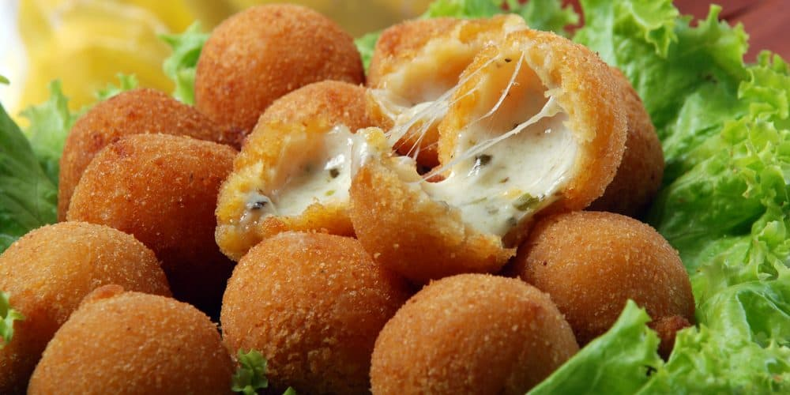

Let's start with the best pastry in the world: COXINHA!
But, after all, what the heck is coxinha?!
Lemme explain:
Coxinha is basically a fried dough, that is usually filled with shredded chicken and catupiry. But it's not limited to that. We, Brazilians, can go crazy with what goes inside this delicious pastry. There are reports of coxinhas being filled with minced meat, pork, jerked beef, and even sweet fillings as brigadeiro!
To help you understand what Coxinha is all about, here are some curiosities about it:
Coxinha is synonymous with friends!
Coxinha lovers love to share this moment with friends, so they are always surrounded by people. It's not fun to eat something so delicious alone!
Those who eat coxinha also exercise:
Who said that food and exercise don't go together? More than 20 facial muscles are used to bite a coxinha. This is a great exercise for the face muscles!
Coxinha fills parties:
If you comment with the sinks that there will be drumsticks at your party, you can be sure, everyone will, and will make sure not to be late! Nobody will miss the opportunity to enjoy a good coxinha.People who love coxinha are more intelligent.
At times these people are the ones who make the wisest decisions. For example, if you first choose between coxinha or snack, they will choose coxinha, for sure!
Coxinha and happiness go together:
People who eat coxinha are happier! Even because, has anyone seen a sad person enjoying a drumstick?
Coxinha lovers are simpler people.
There's no frills with them! It is always a "see me a beer or a soda and a drumstick please!".
Who loves coxinha is warmer:
Coxinha lovers do not miss the opportunity to call friends to eat coxinha, they are always organizing things, and are very receptive to those who also share this love for coxinha.
Coxinha only brings love:
Who loves a coxinha does not care if it is lighter, darker, has catupiry or not. What matters is that a coxinha will be there to be savored.
But why Coxinha is better than Bolinha de Queijo?
It's simple!
While Bolinha de Queijo in Brazil is just filled with cheese (obviously) COXINHA has many and many filling possibilities to all tastes, ages, and personalities. You can even go vegan by making a potato dough Coxinha, it's incredible!
Well, as everyone can see, Coxinha is everything and Bolinha de Queijo nothing :D
Bolinha de Queijo
from the portuguese "Cheese ball"
The practicality of the recipe helped to popularize the snack. You may call it a finger food, but everybody grab them with a full hand, just to be sure to take as much as possible. In the recipe it can be uses oregano, parsley, and other spices, and also come with sauces such as tomato, mustard and ketchup. The fame of cheese balls started at children's parties, and was soon incorporated into receptions such as weddings. From there to the bars it was fast, and soon they conquered from North to South of Brazil, becoming a constant presence on the menus.

People believe that it's a fried pastry snack from heavens, and who am I to say it is not? One bite awakens a flow of pure golden flavor, known as melted cheese. Let's be honest: people who doesn't love cheese can't be relied on. Whoever is lactose intolerant must know that this snack is a delight worth spending Lactase enzymes.
Coxinha wished in it wildest dreams to be as good and democratic as Bolinha de Queijo, but she can't - boohoo. Cheese, what's not to love? Not only is a very effective way to calm your baby (as seen in previous image), it's a short-cut to everybody's heart. Vegetarians wants to be a part of the party but once they know there's chicken in this pastry, they sing "all by myself". Vegetarian coxinha? Don't make me laugh. Bolinha de Queijo is always moist and a respectful foodporn, while Coxinha needs catupiry to have this moist - a ingredient that requires milk, therefore excludes the only demographics who makes sense to choose Coxinha over Bolinha de queijo, the lactose intolerant.